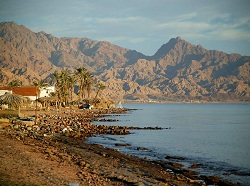

|
 |
|  |
Dahab is a small town situated on the southeast coast of the Sinai Peninsula in Egypt. Dahab attracts large numbers of tourists. It is world-renowned for its windsurfing. Reliable winds provide superb flat-water conditions inside Dahab's sand spit. Further away from shore, wavy conditions couple with strong winds to provide formidable conditions for keen windsurfers. SCUBA diving, free-diving and snorkelling are also popular activities with many reefs immediately adjacent to waterfront hotels. The nearby Blue Hole-which is nicknamed as "The World's Most Dangerous Diving Site"- and Canyon are internationally famous dive spots . The increasing destruction of coral from reckless divers/dive centres diving is a pressing issue that is causing some worry, sparking the need to regulate dive centres more thoroughly. Land based activities include camel, horse, cycling, mountain bikes trips, jeep and quad bike trips. Mount Sinai is a two hours drive, with Saint Catherine's Monastery being a popular | |
|---|---|---|
 |
Marsa Alam is a town in south-eastern Egypt, located on the western shore of the Red Sea. Among the most famous beaches around Marsa Alam is the Abu Dabab beach. In Abu Dabab, turtles are a common sight and it is nearly guaranteed that when diving, one will see at least one turtle. For tourists who seek to see something less typical, there is marine wildlife like sea snakes, crocodilefish and octopuses. Marsa Alam also has some inland attractions, such as the Emerald Mines and the Temple of Seti I at Khanais |
|
| Moses eyes are the eyes of fresh water is believed to be dating back to the time of the Prophet Moses and located in the area of Ras Sidr, South Sinai, Egypt. Located oasis eyes Musi , which includes 12 oasis just 35 kilometers from the city of Suez and 60 km from Ahmed Hamdi Tunnel linking Suez and the Sinai Peninsula One of the tourist areas of distinctive character visited by tourists on their way to Sharm el-Sheikh , where are the beauty of its climate and its spectacular scenery overlooking directly on the coast of the Gulf of Suez and includes palm trees and dense grass in addition to the eyes of fresh water and all drinkable if they were cleared and most of the population of the people of South Sinai . |
||
 |
Ras Mohammad is a national park in Egypt at the southern extreme of the Sinai Peninsula, overlooking the Gulf of Suez on the west and the Gulf of Aqaba to the east. The park is situated in the tourist region of the Red Sea Riviera, located 12 km from the city of Sharm-el-Sheikh. The park spans an area of 480 km², including 135 km² of surface land area and 345 km² area over water Marsa Bareika is a small bay inlet in Ras Mohammed, and Marsa Ghozlani is a very small inlet located across from the park visitors center. |
|
 |
Port Safaga, is a town in Egypt, on the coast of the Red Sea, located 53 km (33 mi) south of Hurghada This small port is also a tourist area that consists of several bungalows and rest houses, including the Safaga Hotel, with a capacity of 48 rooms Having numerous phosphate mines, it is regarded as the phosphates export center. A paved road of 164 km (102 mi) connects Safaga to Qena of Upper Egypt. |
|
 |
Taba is a small Egyptian town near the northern tip of the Gulf of Aqaba. Taba is the location of Egypt's busiest border crossing with neighbouring Israel. Little more than a bus depot and a luxury hotel (complete with casino), Taba is a frequent vacation spot for Egyptians and tourists especially those from Israel on their way to other destinations in Egypt or as a weekend getaway. It is the northernmost resort of Egypt's Red Sea Riviera. |
|
 |
Farafra has an estimated 5,000 inhabitants (2002) mainly living in the town of Farafra and is mostly inhabited by the local Bedouins. Parts of the town have complete quarters of traditional architecture, simple, smooth, unadorned, all in mud colour. Local pride has also secured endeavours to secure local culture. Also located near Farafra are the hot springs at Bir Sitta and the El-Mufid lake. "Jasrmmd road, and the locally developed clays at the top of the white chalk west of Qasr Farafra. As Zittel placed the beds at the former place below the White Chalk, this new position assigned to them may be regarded as provisional until confirmed or disproved by palaeontological evidence derived from the latter locality |
|

Program 1 :
You will visit:
(DAHAB) in Sinai,
Then (TABA)..
the cost of this program =2000 >>>1800$.
Program 2 :
Another trip in Sinai>> You will visit:
(MOSES EYES) ,
then the national Park (RAS MOHAMED)
And full week in (ShARM EL SHIKH)
the cost of this program for 10 days=5000 >>>4750$.
Program 3 :